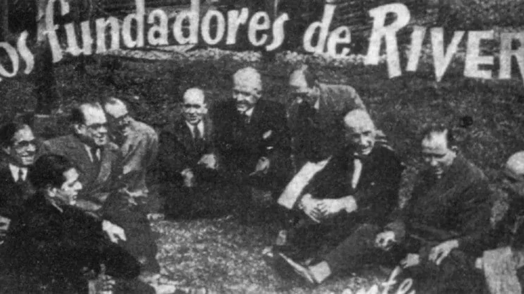

25 de mayo de 1901 - La Boca, Buenos Aires
En el Día de la Patria de 1901, un grupo de jóvenes inmigrantes fundó el Club Atlético River Plate, dando origen a lo que sería la institución más grande del fútbol argentino.
Todo comenzó cuando los jóvenes del barrio de La Boca, que solían jugar al fútbol en las calles, decidieron formalizar su pasión creando un club. La reunión fundacional se realizó en la casa de Pedro Martínez, ubicada en la calle Almirante Brown 927.
Primer presidente del club
Anfitrión de la reunión fundacional
Propuso el nombre "River Plate"
Uno de los impulsores principales
Hermano de Leopoldo, jugador clave
Futuro dirigente importante
El nombre "River Plate" fue sugerido por Bernardo Messina, inspirado en los barcos que veía en el Riachuelo con la inscripción "The River Plate" (nombre en inglés del Río de la Plata).
Fundación oficial el 25 de mayo. Primer uniforme: camisa blanca con una banda diagonal roja.
Primer ascenso a Primera División
Cambio definitivo a la camiseta blanca con banda roja que conocemos hoy
Traslado del barrio de La Boca a Recoleta
Primer título profesional
Documental de la Fundación (2021)